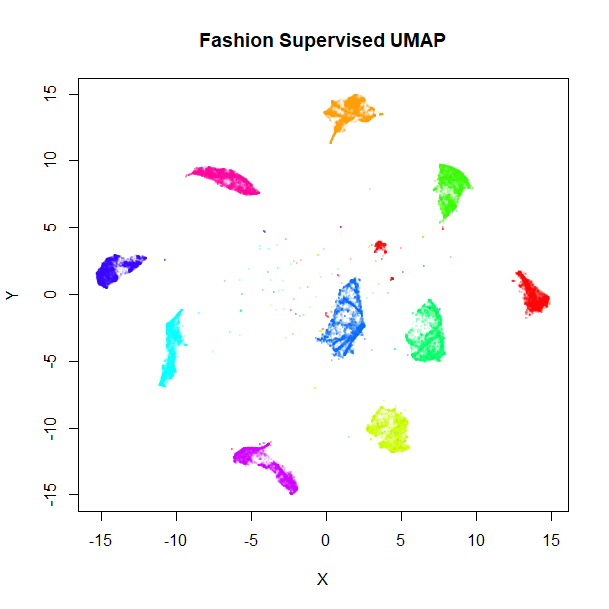
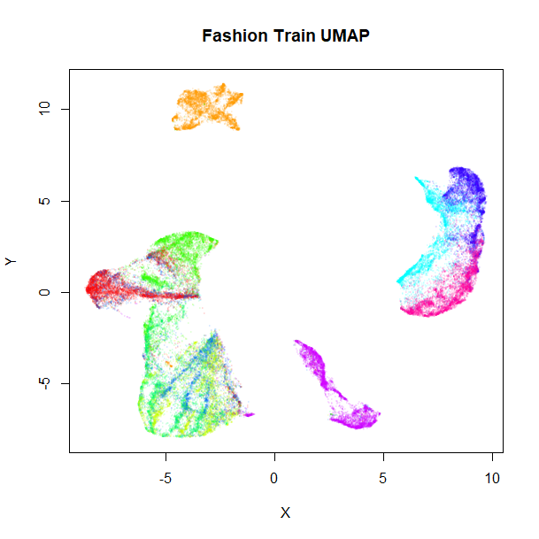
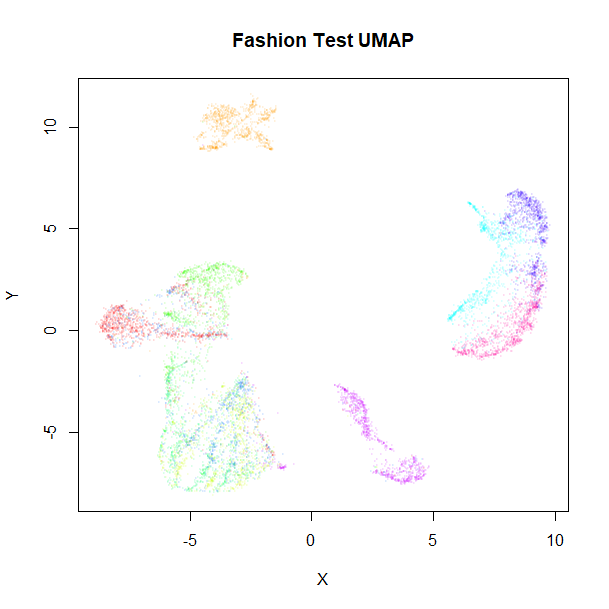

Among other things, UMAP provides two interesting extensions to its basic dimensionality reduction. First, it can do a supervised embedding, where labels (or numeric values) are leveraged so that similar points are closer together than they would otherwise be. Second, it can do metric learning, by embedding out-of-sample points based on an existing embedding.
This document shows how to do it in uwot, but more
information is available in UMAP’s documentation.
The example dataset used is Fashion MNIST. One way to download it in uwot-ready form is:
devtools::install_github("jlmelville/snedata")
fashion <- snedata::download_fashion_mnist()The Fashion MNIST dataset contains 70,000 images of fashion items, in
one of ten classes. A factor column, Label contains the id
of each item (from 0 to 9) for backwards
compatibility with the MNIST dataset, which Fashion MNIST is designed to
be a drop-in replacement for. A more descriptive, but entirely
equivalent, factor column, Description provides a short
text string to describe the classes, e.g. the Description
"Coat" and the Label 4 are
equivalent.
Visualization
To produce the plots below, I used my vizier package, which can be installed using:
devtools::install_github("jlmelville/vizier")I’ll show the commands to produce the plots before they are displayed.
Supervised Learning
We’ll compare the supervised result with a standard run of UMAP:
For supervised learning, provide a suitable vector of labels as the
y argument to umap (or
tumap):
Let’s take a look at the results, the unsupervised embedding on the left, and the supervised version on the right:
vizier::embed_plot(fashion_umap, fashion, cex = 0.5, title = "Fashion UMAP", alpha_scale = 0.075)
vizier::embed_plot(fashion_sumap, fashion, cex = 0.5, title = "Fashion Supervised UMAP", alpha_scale = 0.075) |
 |
Clearly, the supervised UMAP has done a much better job of separating out the classes, although it has also retained the relative location of the clusters pretty well, too.
Metric Learning
It’s also possible to use an existing embedding to embed new points. Fashion MNIST comes with its own suggested split into training (the first 60,000 images) and test (the remaining 10,000 images) sets, so we’ll use that:
Training proceeds by running UMAP normally, but we need to return
more than just the embedded coordinates. To return enough information to
embed new data, we need to set the ret_model flag when we
run umap. This will return a list. The embedded coordinates
can be found as the embedding item.
Training
For training, we shall continue to use both standard UMAP:
and supervised UMAP:
set.seed(1337)
fashion_sumap_train <- umap(fashion_train, ret_model = TRUE, y = fashion_train$Description)These results shouldn’t be that different from the full-dataset embeddings, but let’s take a look anyway:
vizier::embed_plot(fashion_umap_train$embedding, fashion_train, cex = 0.5, title = "Fashion Train UMAP", alpha_scale = 0.075)
vizier::embed_plot(fashion_sumap_train$embedding, fashion_train, cex = 0.5, title = "Fashion Train Supervised UMAP", alpha_scale = 0.075)|  |  |
Everything looks in order here. The standard UMAP training plot is flipped along the y-axis compared to the full dataset, but that doesn’t matter.
Embedding New Data
To embed new data, use the umap_transform function. Pass
the new data and the trained UMAP model. There’s no difference between
using a standard UMAP model:
set.seed(1337)
fashion_umap_test <- umap_transform(fashion_test, fashion_umap_train)or a supervised UMAP model:
set.seed(1337)
fashion_sumap_test <- umap_transform(fashion_test, fashion_sumap_train)Here are the results:
vizier::embed_plot(fashion_umap_test, fashion_test, cex = 0.5, title = "Fashion Test UMAP", alpha_scale = 0.075)
vizier::embed_plot(fashion_sumap_test, fashion_test, cex = 0.5, title = "Fashion Test Supervised UMAP", alpha_scale = 0.075)|  |  |
The test data results are very obviously embedded in a similar way to the training data. Of particular interest are the test results with the supervised model, where the clusters stay well separated compared to the unsupervised results, although there are some misclassifications of shirts, t-shirts, coats and pullover classes (the green, blue and red clusters on the right of the supervised UMAP plot).
Accuracy Results
To quantify this improvement, we can look at accuracy in predicting
the test set labels by using the embedded coordinates as a k-nearest
neighbor classifier. There are a variety of ways I can imagine using the
information in the model, but two obvious ones are to use the label of
the nearest neighbor, (1NN) or take a vote using the
n_neighbors (in this case, 15) nearest neighbors
(15NN).
For standard UMAP, the 1NN accuracy is 71%, and the
15NN accuracy is 77%. Using supervised UMAP, these
accuracies improve to 83% and 84%, respectively. So quantitatively, the
supervised UMAP is a big help in correctly classifying the test
data.
To put these numbers in perspective, we can carry out similar
calculations using the input data directly. Here, the 1NN
accuracy is 85% and the 15NN accuracy is 84%. Possibly, the
lack of improvement on going from 1 to 15 neighbors indicates that a
different value of the n_neighbors parameter could improve
the embedding, but I haven’t pursued that.
At any rate, it’s clear that the Fashion MNIST images do not embed
well in two dimensions, although supervised UMAP gets impressively close
to matching the high dimensional results. Maybe supervised UMAP can do
even better by a suitable choice of target_weight and
n_components on top of fiddling with
n_neighbors.
The Fashion MNIST website contains a page that shows the accuracy
using 129 scikit-learn
methods, and the 15NN supervised UMAP accuracy puts us
in the top 60, which isn’t bad, considering the only hyperparameter
search I did was to look at 1NN and 15NN.
However, although the highest accuracy reported on that page is 89.7%,
the deep
learning results achieve 90-97%.
Supervised UMAP: Numerical Y
Here’s an example of using supervised UMAP with a numerical target
vector. We shall use the diamonds dataset that comes with
the ggplot2
package, as it is of a similar size to MNIST.
There are 10 variables associated with each diamond: five numeric
values related to the geometry of the diamonds (table,
x, y, z and depth),
three factors that measure the quality of the diamond (cut,
color and clarity), and the price
in dollars. The price seems like a perfect candidate for
the sort of thing we’d want as the target vector, leaving the other nine
variables to be used for the dimensionality reduction.
uwot’s implementation of UMAP uses all numeric columns
in can find in its calculations, so to avoid including the
price in the non-supervised part of UMAP, let’s create a
new data frame, initially with the geometric data:
dia <- diamonds[, c("carat", "x", "y", "z", "table")]The depth column is related to x,
y and z (albeit non-linearly) so I’m not going
to include it.
Additionally, the factors cut, color and
clarity are all ordinal variables, i.e. their categories
can be ordered, so we can convert these to a numeric scale and include
them as well:
dia$cut <- as.numeric(diamonds$cut)
dia$color <- as.numeric(diamonds$color)
dia$clarity <- as.numeric(diamonds$clarity)We now have a dataset with 53,940 rows and 8 columns. There are 360 duplicates, but it doesn’t seem to affect the results particularly.
Now, I’m not saying that this is the trickiest dataset to extract any meaning from. First, let’s look at some standard unsupervised results. For starters, here’s a plot of the first two principal components, using the irlba package:
dia_pca <- irlba::prcomp_irlba(dia, n = 2, scale. = TRUE)
vizier::embed_plot(dia_pca$x, diamonds$price, title = "Diamonds PCA", color_scheme = "RColorBrewer::Spectral", alpha_scale = 0.1, cex = 0.5, pc_axes = TRUE)Because the different columns have different units and meaning, I set
scale. = TRUE to equalize their variances. The color scheme
is “Spectral” palette from ColorBrewer: red indicates a low price and
blue a high price. Despite the majority of the dataset being clumped
together in the plot due to some outliers you can’t really see, the
progression of prices from low to high is already pretty well captured
with two components.
Anyway, let’s see what UMAP does with it. Like with PCA, the columns
are all scaled to have equal variance (scale = TRUE):
dia_umap <- umap(dia, scale = TRUE, verbose = TRUE)
vizier::embed_plot(dia_umap, diamonds$price, title = "Diamonds UMAP", color_scheme = "RColorBrewer::Spectral", alpha_scale = 0.1, cex = 0.5, pc_axes = TRUE)
Not bad. The high price diamonds are clumped together in their own little clusters in the middle of the plot. On this occasion, I prefer the layout that’s initialized from the PCA results, though:
dia_umap_from_pca <- umap(dia, scale = TRUE, verbose = TRUE, init = dia_pca$x)
vizier::embed_plot(dia_umap_from_pca, diamonds$price, title = "Diamonds UMAP (PCA init)", color_scheme = "RColorBrewer::Spectral", alpha_scale = 0.1, cex = 0.5, pc_axes = TRUE)
This maintains the global structure of the PCA result. Rather than
have to separately create the PCA, you can also use
init = "pca" and get the same results (uwot
uses irlba internally for this, so there’s no loss of
speed).
Onto the supervised result. Results are not particularly affected by the choice of initialization, so for simplicity we’ll just use the standard spectral initialization:
dia_sumap <- umap(dia, scale = TRUE, verbose = TRUE, y = diamonds$price)
vizier::embed_plot(dia_sumap, diamonds$price, title = "Diamonds Supervised UMAP", color_scheme = "RColorBrewer::Spectral", alpha_scale = 0.1, cex = 0.5, pc_axes = TRUE)
As expected, the embedding is now even more well-organized along the price of the diamonds.
There is a visible gap between the lowest price diamonds (on the
right) and the rest of the embedding. If you increase the
n_epochs parameter and allow the optimization to proceed,
this gap increases substantially, making the plot harder to read.
Adjusting the n_epochs parameter, along with the
target_n_neighbors and target_weight
parameters may be required to strike the right balance. At the time of
writing, I’m not aware of many examples of supervised UMAP with a
numeric vector (in fact none except this thing I just wrote) so I cannot
provide a lot of sage wisdom on this matter.